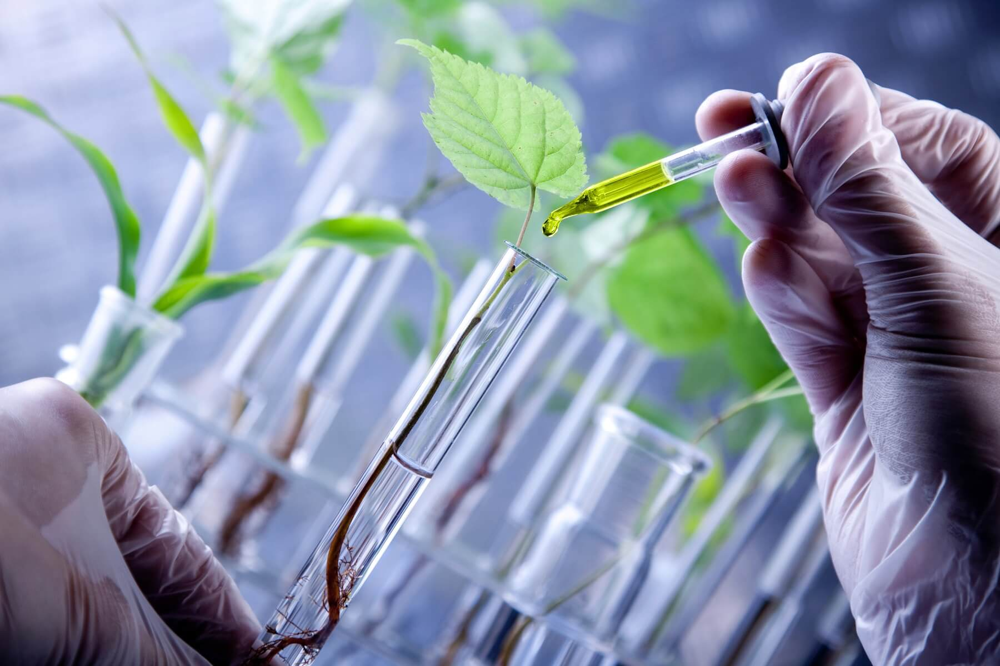

O melhoramento de plantas engloba todas as técnicas, os métodos, as estratégias ou os recursos utilizados para que algum progresso seja incorporado a uma espécie vegetal. De modo geral, esse progresso está relacionado com a melhora do conteúdo genético da espécie trabalhada, em estreita relação com o ambiente em que esta espécie será cultivada, o que implica uma atividade dinâmica, exigindo ajustes genéticos para se adaptar ao ambiente, que é dinâmico em função dos diferentes fatores que o compõem. O melhoramento visa obter genótipos superiores, mas a expressão desses genótipos, que são os fenótipos, dependem, entre outros, do ambiente em que este genótipo está inserido
O melhoramento de plantas é a forma mais ecologicamente responsável de aumentar a produção de alimentos. Nas demais áreas, é necessário adaptar o ambiente às plantas. No melhoramento, é possível adaptar as plantas ao ambiente. A aplicação das técnicas de melhoramento tem sido efetiva com todas as espécies agrícolas.
